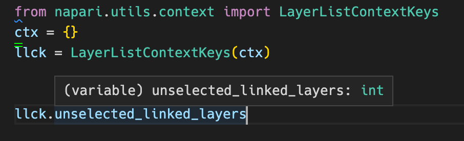

Contexts and Expressions in napari¶
Note
This page is mostly aimed at developers who are interested in contributing to or understanding the inner workings of napari. While the concept of expressions will be relevant for plugin developers writing plugin manifests, it won’t be necessary for plugin devs or end-users to understand the implementation details described on this page.
In napari, we’d like to be able to capture the concept of some condition being
True or False, prior to actually having the context required to evaluate
it. For example, a plugin (or napari itself) might want to stipulate that a
given function should only be enabled when “the active layer has at least 3
dimensions”.
At runtime, in Python code, this might be captured by the expression:
viewer.layers.selection.active.data.ndim >= 3
However, if you don’t have access to an actual viewer instance, that
doesn’t work.
Contexts and Expressions are two concepts being introduced along with the
second-generation napari plugin engine (npe2) that capture the abstract idea of
“some condition” (an Expression) that can be evaluated at some later time,
with a concrete set of keys and values (the Context).
Python expressions¶
In Python, expressions are simple combinations of values and
operations that can be reduced to a single value. For example, 1 > 5 is an
expression that always reduces to the value False when evaluated. x > 5 and y == 'hello' is also an expression that reduces to a boolean value; however, in
order to evaluate that expression, we need to be able to fill in the values for
the variable names “x” and “y”. Those values are provided by some
context (or “namespace”), which maps the variable names to their values.
The value of an expression depends on the context in which it is evaluated.
In [1]: expression = "x > 5 and y == 'hello'"
In [2]: context_a = {'x': 7, 'y': 'hello'}
In [3]: context_b = {'x': 8, 'y': 'howdie!'}
In [4]: eval(expression, context_a)
Out[4]: True
In [5]: eval(expression, context_b)
Out[5]: False
Napari expressions¶
Napari introduces Expr objects that represent an
expression “without a context”, to be evaluated later.
Tip
napari’s Expr class subclasses from
ast.AST and shares many
similarities with the body of
ast.Expr. However, for
the sake of evaluation safety, napari’s Expr only supports a subset of
operations, omitting things like function calls, generators, comprehensions, and
collections. It’s not important to fully understand ASTs to use napari
expressions, but for a good introduction to Python’s abstract syntax tree (AST)
module, see https://greentreesnakes.readthedocs.io.
A string expression can be converted to a napari Expr object with the
parse_expression function:
In [6]: from napari.utils.context import parse_expression
In [7]: expr = parse_expression("x > 5 and y == 'hello'")
In [8]: expr
Out[8]:
BoolOp(
op=And(),
values=[
Compare(
left=Name(id='x', ctx=Load()),
ops=[Gt()],
comparators=[Constant(value=5)]
),
Compare(
left=Name(id='y', ctx=Load()),
ops=[Eq()],
comparators=[Constant(value='hello')]
)
]
)
The expression object can be evaluated by passing a context (a Mapping) to
its eval method:
In [9]: expr.eval({'x': 7, 'y': 'hello'})
Out[9]: True
and it can also be combined with other expressions and/or constants using operators:
In [10]: new_expr = expr & (7 > 10) # always False
In [11]: new_expr.eval({'x': 7, 'y': 'hello'})
Out[11]: False
The following operators are supported:
Operator |
Symbol |
Example |
|---|---|---|
Equality |
== |
“active_layer_type == image” |
Inequality |
!= |
“active_layer_type != labels” |
Or |
| |
“active_layer_is_rgb | all_layers_same_shape” |
And |
& |
“active_layer_is_rgb & all_layers_same_shape” |
Not |
~ |
~active_layer_is_rgb |
Greater than |
> >= |
“unselected_linked_layers >= 1” |
Less than |
< <= |
“layers_selection_count < 2” |
Math |
+ - * / |
“layers_selection_count + unselected_linked_layers” |
napari context keys¶
To capture napari-specific conditions, napari will declare special
names that can be used in a napari expression. Taking the example above, a
plugin might only want to provide a function if “the active layer has at least 3
dimensions”. For this, napari recognizes the name "active_layer_ndim" used
in an expression. In a plugin manifest, the plugin can provide a when clause
to enable/disable a given command:
command:
id: myplugin.my_command
when: active_layer_ndim >= 3
Some example context key names (currently) include:
Name |
Description |
|---|---|
|
Number of layers currently selected |
|
True when all selected layers are linked |
|
True when the active layer is RGB |
|
Lowercase name of active layer type, or None if no layer is active. |
|
True when there is at least one selected layer and all selected layers are images |
|
Number of dimensions in the active layer, or |
… many more |
ContextKey objects¶
To track the special name strings that can be used in expressions, napari
has the ContextKey class. Instances of ContextKey subclass from
ast.Name and represent
a variable name in an expression. Additionally, they have a description that
can be used in documentation, a default_value, and a getter function that
can be called to retrieve the current value (the parameters passed to the
getter will depend on the context key… see Updating
Contexts below for more).
In order to keep related keys together, ContextKey instances will usually be
declared as class attributes on a ContextNamespace class:
# all of the getters here receive an instance of viewer.layers.selection
class LayerListContextKeys(ContextNamespace):
layers_selection_count = ContextKey(
default_value=0,
description="Number of layers currently selected",
getter=lambda sel: len(sel),
)
active_layer_is_rgb = ContextKey(
default_value=False,
description="True when the active layer is RGB",
getter=lambda sel: getattr(sel.active, "rgb", False),
)
active_layer_ndim = ContextKey(
None,
"Number of dimensions in the active layer, or `None` if nothing is active",
lambda s: s.active and getattr(s.active.data, "ndim", None),
)
The members of a ContextNamespace are static Expr objects.
Similar to a python Enum, you can see all of its members using the
__members__ attribute on the class:
In [13]: LayerListContextKeys.__members__
Out[13]:
mappingproxy({
'layers_selection_count': ContextKey(id='layers_selection_count'),
'active_layer_is_rgb': ContextKey(id='active_layer_is_rgb'),
'active_layer_ndim': ContextKey(id='active_layer_ndim')
})
A nice aspect of ContextKeys is that they can be used in expressions:
In [14]: expr = LayerListContextKeys.active_layer_ndim >= 3
In [15]: expr.eval({'active_layer_ndim': 2})
Out[15]: False
But unlike a simple string, they can also provide type hinting, linting capabilities, and IDE autocompletion (for napari developers).

A record of all registered context keys can be retrieved with the class method
ContextKey.info()
Contexts¶
Now that we’ve seen how expression names are declared, let’s discuss the “context” in which these expressions are evaluated.
As mentioned, a context is ultimately just a mapping between variable names and
their values. When evaluating a napari expression with Expr.eval, you can
indeed just pass a dict as that mapping.
Important objects in napari, such as the Viewer and the LayerList will be
associated with a Context object that tracks the value of various context
keys. It is the job of these various objects (i.e. the Viewer and the
LayerList) to update the values in their Contexts when they change.
Continuing with the example above, if the user clicks on a 4-dimensional layer,
the LayerList would set the context key active_layer_ndim to 4. napari
would then be able to enable/disable various commands and menus that required a
specific number of dimensions in the active layer.
The Context class¶
The napari Context class is a subclass of
collections.ChainMap
that also emits events when a key has been modified. ChainMap is useful here
as it allows us to have “sub-contexts” that are children of some parent context.
Child contexts can access all of the keys of the parent (but not vice-versa).
For example because a Viewer has a LayerList, all of the keys in the
Viewer context are available to the LayerList context.
In [1]: from napari.utils.context import get_context
In [2]: ctx = get_context(viewer.layers)
In [3]: ctx
Out[3]: Context(
{
'layers_selection_count': 0,
'all_layers_linked': False,
'unselected_linked_layers': 0,
'active_layer_is_rgb': False,
'active_layer_type': None,
'only_images_selected': False,
'only_labels_selected': False,
'active_layer_ndim': None,
'active_layer_shape': None,
'active_layer_dtype': None,
'all_layers_same_shape': False
},
{}, # the viewer context ... (no keys yet)
SettingsAwareContext({})
)
The “root” context is a special SettingsAwareContext that can access keys in
the global settings. Because contexts are ChainMaps, they can all access
the settings:
In [4]: ctx['settings.appearance.theme']
Out[4]: 'dark'
When we evaluate an expression, we can provide it one of these context objects:
In [5]: expr = LayerListContextKeys.layers_selection_count > 0
In [6]: expr.eval(ctx)
Out[6]: False
Updating Contexts¶
You may be wondering exactly how objects such as Viewer and LayerList update
the keys in their contexts. The aforementioned
ContextNamespace comes into play here again. A
ContextNamespace can be instantiated, and bound to a specific Context
instance.
In [6]: ctx = get_context(viewer.layers)
In [7]: llck = LayerListContextKeys(ctx)
Attributes of an instantiated ContextNamespace now act as getters (and
setters!) of their respective ContextKey in the associated Context.
In [8]: llck.layers_selection_count
Out[8]: 0
In [9]: ctx['layers_selection_count']
Out[9]: 0
Finally, the update method can be used to trigger an update of all of the
ContextKeys in a given ContextNamespace whenever a specific event occurs,
(the value is updated by passing the event.source to the getter function
that was declared in the ContextKey constructor)
The following example works because all of the getter methods declared
in LayerListContextKeys take an instance of layers.selection:
In [9]: viewer.layers.selection.events.changed.connect(llck.update)
In [10]: viewer.add_points()
Out[10]: <Points layer 'Points' at 0x13c62b1f0>
In [11]: llck.layers_selection_count
Out[11]: 1
In [12]: ctx['layers_selection_count']
Out[12]: 1
Summary: A (rough) full picture¶
napari creates special context “names” using
ContextKeyandContextNamespaceclass LayerListContextKeys(ContextNamespace): active_layer_type = ContextKey( None, "Lowercase name of active layer type, or None of none active.", lambda s: s.active and s.active._type_string ) active_layer_is_rgb = ContextKey( False, "True when the active layer is RGB", lambda s: getattr(s.active, "rgb", False) )
Internally (in napari code), we can use those objects directly to declare expressions in an IDE-friendly way. For example, here we are declaratively populating the layer-list context menu; this is a function that will split the current stack into multiple layers, but it is only enabled when the selected image is a (non-RGB)
Imagelayer.'napari:split_stack': { 'description': trans._('Split Stack'), 'action': _split_stack, 'enable_when': LLCK.active_layer_type == "image", 'show_when': ~LLCK.active_layer_is_rgb, }
Externally (in plugin manifests), plugin developers use the string form to express conditions. For example, this plugin manifest offers up a command (just a callable) that is only enabled when the the active layer is an RGB image.
name: my_plugin commands: id: my_plugin.some_command when: active_layer_is_rgb
When this manifest is parsed, those expressions will be converted into napari
Exprobjects internally.During runtime, napari maintains and updates contexts
As these contexts are updated, they emit events that allow menus, keybindings, and other things to update themselves accordingly. For example, the layer-list context menu might update the items in the menu that are visible and/or enabled:
context_menu.update_from_context(get_context(layer_list))
where
update_from_contextis a function that takes in aContextand updates all of the “action” items in the menu according to theirwhenclauses (declared internally or externally in steps 3 and 4)# pseudocode def update_from_context(self, context): for item in self.actions(): expression = item.when # or however you get the expression item.setEnabled(expression.eval(ctx))